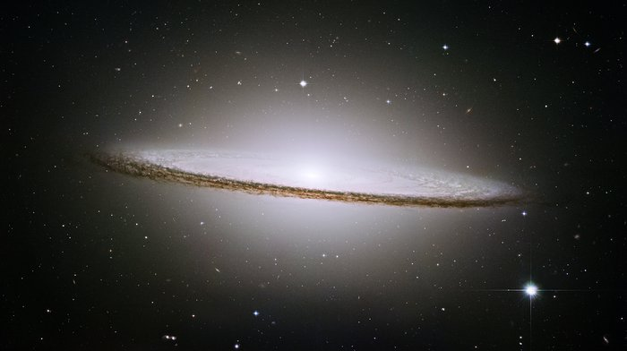
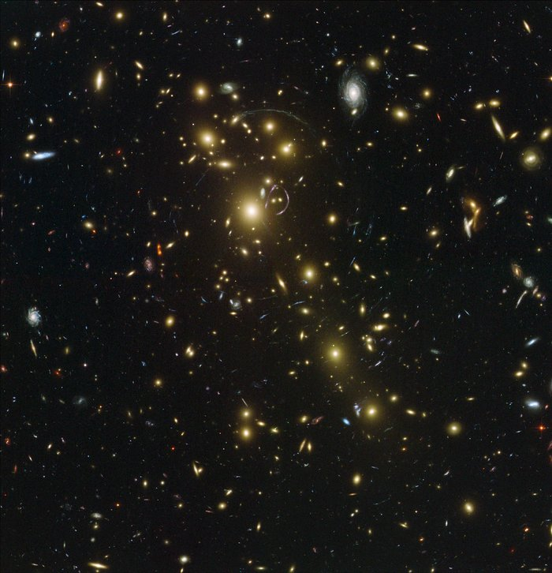

Outer space, or simply space, is the expanse that exists beyond the Earth and between celestial bodies Outer space is not completely empty—it is a hard vacuum containing a low density of particles, predominantly a plasma of hydrogen and helium, as well as electromagnetic radiation, magnetic fields, neutrinos, dust, and cosmic rays. The baseline temperature of outer space, as set by the background radiation from the Big Bang, is 2.7 kelvins (−270.45 °C; −454.81 °F). The plasma between galaxies accounts for about half of the baryonic (ordinary) matter in the universe; it has a number density of less than one hydrogen atom per cubic metre and a temperature of millions of kelvins. Local concentrations of matter have condensed into stars and galaxies. Studies indicate that 90% of the mass in most galaxies is in an unknown form, called dark matter, which interacts with other matter through gravitational but not electromagnetic forces. Observations suggest that the majority of the mass-energy in the observable universe is dark energy, a type of vacuum energy that is poorly understood. Intergalactic space takes up most of the volume of the universe, but even galaxies and star systems consist almost entirely of empty space.
Outer space does not begin at a definite altitude above the Earth's surface. However, the Kármán line, an altitude of 100 km (62 mi) above sea level, is conventionally used as the start of outer space in space treaties and for aerospace records keeping. The framework for international space law was established by the Outer Space Treaty, which entered into force on 10 October 1967. This treaty precludes any claims of national sovereignty and permits all states to freely explore outer space. Despite the drafting of UN resolutions for the peaceful uses of outer space, anti-satellite weapons have been tested in Earth orbit.
Humans began the physical exploration of space during the 20th century with the advent of high-altitude balloon flights. This was followed by manned rocket flights and, then, manned Earth orbit, first achieved by Yuri Gagarin of the Soviet Union in 1961. Due to the high cost of getting into space, manned spaceflight has been limited to low Earth orbit and the Moon. On the other hand, unmanned spacecraft have reached all of the known planets in the Solar System.
Outer space represents a challenging environment for human exploration because of the hazards of vacuum and radiation. Microgravity also has a negative effect on human physiology that causes both muscle atrophy and bone loss. In addition to these health and environmental issues, the economic cost of putting objects, including humans, into space is very high.
Big Bang
The Big Bang theory is a cosmological model for the observable universe from the earliest known periods through its subsequent large-scale evolution. The model describes how the universe expanded from a very high-density and high-temperature state, and offers a comprehensive explanation for a broad range of phenomena, including the abundance of light elements, the cosmic microwave background (CMB) radiation, large-scale structure and Hubble's law (the farther away galaxies are, the faster they are moving away from Earth). If the observed conditions are extrapolated backwards in time using the known laws of physics, the prediction is that just before a period of very high density there was a singularity which is typically associated with the Big Bang. Current knowledge is insufficient to determine if the singularity was primordial.
Stars
A star is an astronomical object consisting of a luminous spheroid of plasma held together by its own gravity. The nearest star to Earth is the Sun. Many other stars are visible to the naked eye from Earth during the night, appearing as a multitude of fixed luminous points in the sky due to their immense distance from Earth. Historically, the most prominent stars were grouped into constellations and asterisms, the brightest of which gained proper names. Astronomers have assembled star catalogues that identify the known stars and provide standardized stellar designations. The observable Universe contains an estimated 1×1024 stars,but most are invisible to the naked eye from Earth, including all stars outside our galaxy, the Milky Way.
Pulsar
A pulsar (from pulse and -ar as in quasar) is a highly magnetized rotating neutron star that emits beams of electromagnetic radiation out of its magnetic poles. This radiation can be observed only when a beam of emission is pointing toward Earth (much like the way a lighthouse can be seen only when the light is pointed in the direction of an observer), and is responsible for the pulsed appearance of emission. Neutron stars are very dense, and have short, regular rotational periods. This produces a very precise interval between pulses that ranges from milliseconds to seconds for an individual pulsar. Pulsars are one of the candidates for the source of ultra-high-energy cosmic rays (see also centrifugal mechanism of acceleration).
Quasar
A quasar (also known as a quasi-stellar object abbreviated QSO) is an extremely luminous activegalactic nucleus (AGN), in which a supermassive black hole with mass ranging from millions to billions of times the mass of the Sun is surrounded by a gaseous accretion disk. As gas in the disk falls towards the black hole, energy is released in the form of electromagnetic radiation, which can be observed across the electromagnetic spectrum. The power radiated by quasars is enormous: the most powerful quasars have luminosities thousands of times greater than a galaxy such as the Milky Way.
Objects whose gravitational fields are too strong for light to escape were first considered in the 18th century by John Michell and Pierre-Simon Laplace. The first modern solution of general relativity that would characterize a black hole was found by Karl Schwarzschild in 1916, although its interpretation as a region of space from which nothing can escape was first published by David Finkelstein in 1958. Black holes were long considered a mathematical curiosity; it was during the 1960s that theoretical work showed they were a generic prediction of general relativity. The discovery of neutron stars by Jocelyn Bell Burnell in 1967 sparked interest in gravitationally collapsed compact objects as a possible astrophysical reality.
Black holes of stellar mass are expected to form when very massive stars collapse at the end of their life cycle. After a black hole has formed, it can continue to grow by absorbing mass from its surroundings. By absorbing other stars and merging with other black holes, supermassive black holes of millions of solar masses (M☉) may form. There is consensus that supermassive black holes exist in the centers of most galaxies.
The presence of a black hole can be inferred through its interaction with other matter and with electromagnetic radiation such as visible light. Matter that falls onto a black hole can form an external accretion disk heated by friction, forming some of the brightest objects in the universe. If there are other stars orbiting a black hole, their orbits can be used to determine the black hole's mass and location. Such observations can be used to exclude possible alternatives such as neutron stars. In this way, astronomers have identified numerous stellar black hole candidates in binary systems, and established that the radio source known as Sagittarius A*, at the core of the Milky Way galaxy, contains a supermassive black hole of about 4.3 million solar masses.
On 11 February 2016, the LIGO collaboration announced the first direct detection of gravitational waves, which also represented the first observation of a black hole merger. As of December 2018, eleven gravitational wave events have been observed that originated from ten merging black holes (along with one binary neutron star merger). On 10 April 2019, the first ever direct image of a black hole and its vicinity was published, following observations made by the Event Horizon Telescope in 2017 of the supermassive black hole in Messier 87's galactic centre.
Once formed, they no longer actively generate heat, and cool over time; however, they may still evolve further through collision or accretion. Most of the basic models for these objects imply that neutron stars are composed almost entirely of neutrons (subatomic particles with no net electrical charge and with slightly larger mass than protons); the electrons and protons present in normal matter combine to produce neutrons at the conditions in a neutron star. Neutron stars are partially supported against further collapse by neutron degeneracy pressure, a phenomenon described by the Pauli exclusion principle, just as white dwarfs are supported against collapse by electron degeneracy pressure. However neutron degeneracy pressure is not by itself sufficient to hold up an object beyond 0.7M☉ and repulsive nuclear forces play a larger role in supporting more massive neutron s tars. If the remnant star has a mass exceeding the Tolman–Oppenheimer–Volkoff limit of around 2 solar masses, the combination of degeneracy pressure and nuclear forces is insufficient to support the neutron star and it continues collapsing to form a black hole.
Constelations
A constellation is an area on the celestial sphere in which a group of stars forms an imaginary outline or pattern, typically representing an animal, mythological person or creature, or an inanimate object.
The origins of the earliest constellations likely go back to prehistory. People used them to relate stories of their beliefs, experiences, creation, or mythology. Different cultures and countries adopted their own constellations, some of which lasted into the early 20th century before today's constellations were internationally recognized. The recognition of constellations has changed significantly over time. Many have changed in size or shape. Some became popular, only to drop into obscurity. Others were limited to a single culture or nation.
The 48 traditional Western constellations are Greek. They are given in Aratus' work Phenomena and Ptolemy's Almagest, though their origin probably predates these works by several centuries. Constellations in the far southern sky were added from the 15th century until the mid-18th century when European explorers began traveling to the Southern Hemisphere. Twelve ancient constellations belong to the zodiac (straddling the ecliptic, which the Sun, Moon, and planets all traverse). The origins of the zodiac remain historically uncertain; its astrological divisions became prominent c. 400 BC in Babylonian or Chaldean astronomy.
Other star patterns or groups called asterisms are not constellations per se, but are used by observers to navigate the night sky. Asterisms may be several stars within a constellation, or they may share stars with more than one constellation. Examples of asterisms include the Pleiades and Hyades within the constellation Taurus and the False Cross split between the southern constellations Carina and Vela, or Venus' Mirror in the constellation of Orion.
Galaxies
A galaxy is a gravitationally bound system of stars, stellar remnants, interstellar gas, dust, and dark matter. The word galaxy is derived from the Greek galaxias (γαλαξίας), literally "milky", a reference to the Milky Way. Galaxies range in size from dwarfs with just a few hundred million (108) stars to giants with one hundred trillion (1014) stars, each orbiting its galaxy's center of mass.
Galaxies are categorized according to their visual morphology as elliptical, spiral, or irregular. Many galaxies are thought to have supermassive black holes at their centers. The Milky Way's central black hole, known as Sagittarius A*, has a mass four million times greater than the Sun. As of March 2016, GN-z11 is the oldest and most distant observed galaxy with a comoving distance of 32 billion light-years from Earth, and observed as it existed just 400 million years after the Big Bang.
Research released in 2016 revised the number of galaxies in the observable universe from a previous estimate of 200 billion (2×1011) to a suggested two trillion (2×1012) or more and, overall, as many as an estimated 1×1024 stars (more stars than all the grains of sand on planet Earth). Most of the galaxies are 1,000 to 100,000 parsecs in diameter (approximately 3000 to 300,000 light years) and separated by distances on the order of millions of parsecs (or megaparsecs). For comparison, the Milky Way has a diameter of at least 30,000 parsecs (100,000 ly) and is separated from the Andromeda Galaxy, its nearest large neighbor, by 780,000 parsecs (2.5 million ly.)
The space between galaxies is filled with a tenuous gas (the intergalactic medium) having an average density of less than one atom per cubic meter. The majority of galaxies are gravitationally organized into groups, clusters, and superclusters. The Milky Way is part of the Local Group, which is dominated by it and the Andromeda Galaxy and is part of the Virgo Supercluster. At the largest scale, these associations are generally arranged into sheets and filaments surrounded by immense voids. Both the Local Group and the Virgo Supercluster are contained in a much larger cosmic structure named Laniakea.
The Milky Way is a barred spiral galaxy with a diameter between 150,000 and 200,000 light-years (ly). It is estimated to contain 100–400 billion stars and more than 100 billion planets. The Solar System is located at a radius of about 27,000 light-years from the Galactic Center, on the inner edge of the Orion Arm, one of the spiral-shaped concentrations of gas and dust. The stars in the innermost 10,000 light-years form a bulge and one or more bars that radiate from the bulge. The galactic center is an intense radio source known as Sagittarius A*, assumed to be a supermassive black hole of 4.100 (± 0.034) million solar masses.
Nebulae
A nebula (Latin for 'cloud' or 'fog'; pl. nebulae, nebulæ or nebulas) is an interstellar cloud of dust, hydrogen, helium and other ionized gases. Originally, the term was used to describe any diffuse astronomical object, including galaxies beyond the Milky Way. The Andromeda Galaxy, for instance, was once referred to as the Andromeda Nebula (and spiral galaxies in general as "spiral nebulae") before the true nature of galaxies was confirmed in the early 20th century by Vesto Slipher, Edwin Hubble and others.
Most nebulae are of vast size; some are hundreds of light-years in diameter. A nebula that is visible to the human eye from Earth would appear larger, but no brighter, from close by. The Orion Nebula, the brightest nebula in the sky and occupying an area twice the diameter of the full Moon, can be viewed with the naked eye but was missed by early astronomers. Although denser than the space surrounding them, most nebulae are far less dense than any vacuum created on Earth – a nebular cloud the size of the Earth would have a total mass of only a few kilograms. Many nebulae are visible due to fluorescence caused by embedded hot stars, while others are so diffuse they can only be detected with long exposures and special filters. Some nebulae are variably illuminated by T Tauri variable stars. Nebulae are often star-forming regions, such as in the "Pillars of Creation" in the Eagle Nebula. In these regions, the formations of gas, dust, and other materials "clump" together to form denser regions, which attract further matter, and eventually will become dense enough to form stars. The remaining material is then believed to form planets and other planetary system objects.
Exosphere
Click the button to see some pictures about space
| Beautiful Galaxy | ||
|---|---|---|
| Name | Cathegory | Photo |
| Hubble sees galaxies galore | Observation |  |
| Hubble mosaic of the majestic Sombrero Galaxy | Observation |  |
| Abell 1703 | Observation |  |
| Artist’s impression of the TRAPPIST-1 planetary system | Artwork |  |
| The Bubble Nebulatd | Observation |  |
| Standout stars | Observation |  |